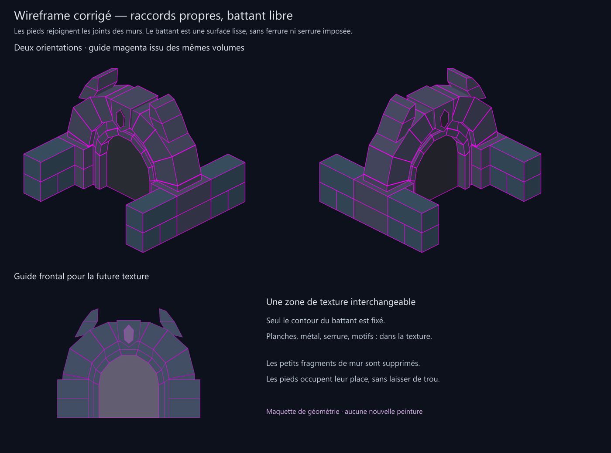

Raccords propres et battant lisse
Les pieds de porte rejoignent maintenant les joints des murs à ⅓ et ⅔ de case. Les quatre petites bandes disparaissent, sans trou. Le battant garde son contour et une épaisseur, mais sa surface ne contient plus aucune ferrure, serrure, découpe de planches ou ornement.

Guides pour la peinture
Les tracés magenta proviennent de la même géométrie que les volumes. Le guide frontal et le masque du battant sont préparés pour la prochaine peinture ; aucune nouvelle texture n’a encore été générée ni intégrée.
Géométrie · Contrôles · Version précédente